.models about identity [2015]

 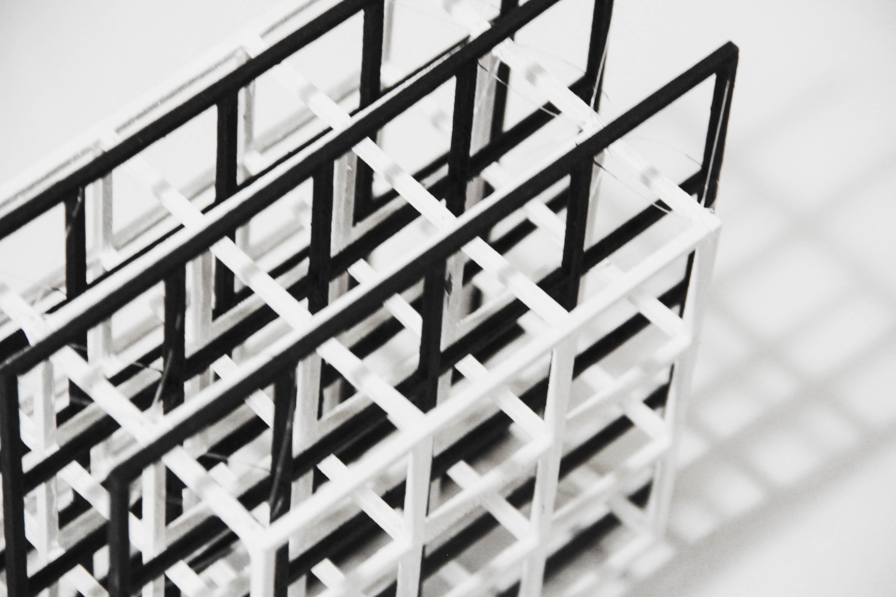
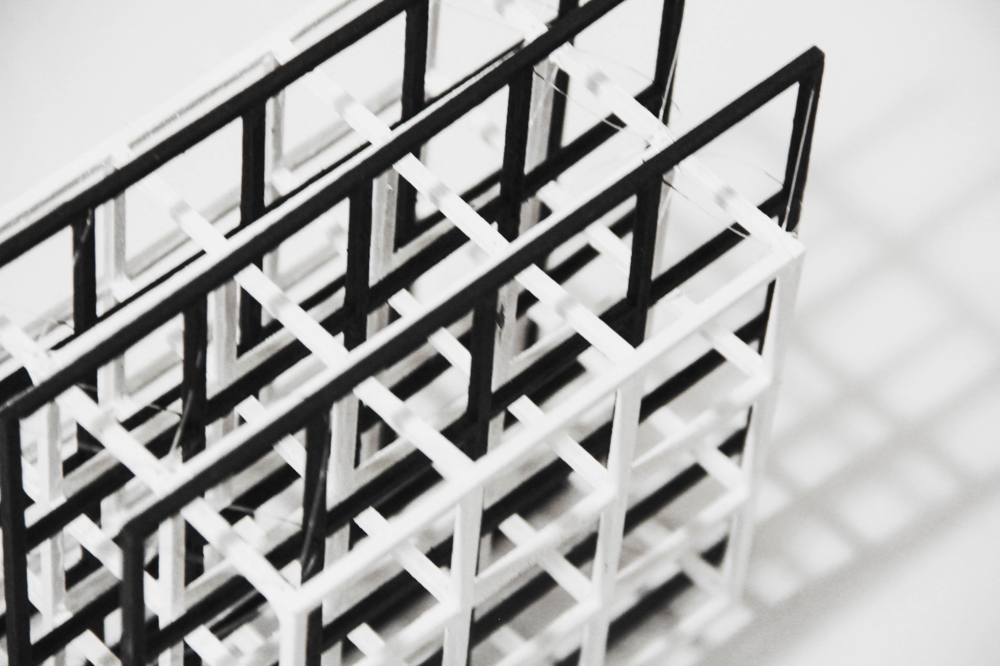
Art concept and Design: Gui Bullejos
Reflections about essential aspects of my professional identity.
I always love to present myself by this model series I have made in 2015. Although it is very old, they keep up with five aspects (memories, acquirements, collaboration, void, balance) of my professional identity.
Memory:
(1st image in the left column)
Since each human involved in the creative process has it own background, their collaboration is unique, because their memories are unique. making every point of view matter.
Reflections about essential aspects of my professional identity.
I always love to present myself by this model series I have made in 2015. Although it is very old, they keep up with five aspects (memories, acquirements, collaboration, void, balance) of my professional identity.
Memory:
(1st image in the left column)
Since each human involved in the creative process has it own background, their collaboration is unique, because their memories are unique. making every point of view matter.
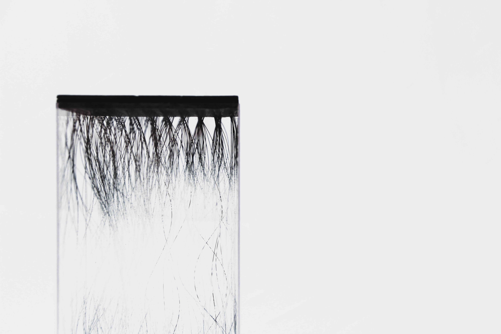
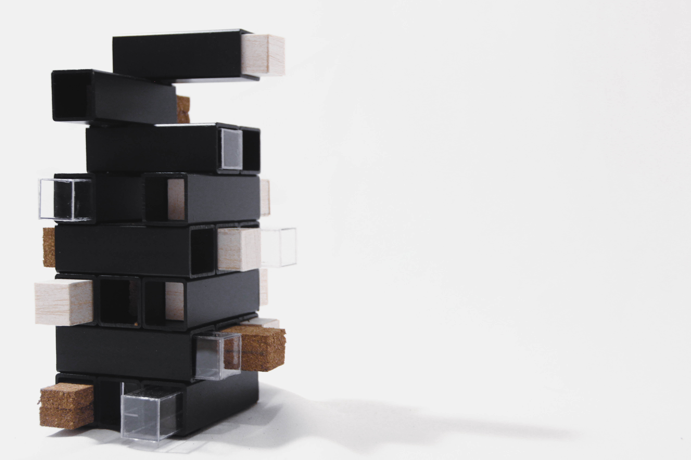
Collaboration:
(2nd image in the left column)
When all points of view complete each other we extremely realize how much the team effort and the sharing of knowledge are fundamental to the development of creative projects.
Balance:
(3rd image in the left column)
There is a obligation of finding the balance between what already exists with what is supposed to be created.
Void:
(1st image in the right column)
Even if a creative project tries to be self-reliance, there is always a void that will be fulfilled by the viewer. That's why we can't foresee the individual singularities of the perception and totally predict it. And this is amazing.
Acquirements:
(2nd image in the right column)
Even though we receive lots of information' clusters, we can only improve by mixing, combining, separating, counterposing, organizing them to develop new kinds of knowledge.
(2nd image in the left column)
When all points of view complete each other we extremely realize how much the team effort and the sharing of knowledge are fundamental to the development of creative projects.
Balance:
(3rd image in the left column)
There is a obligation of finding the balance between what already exists with what is supposed to be created.
Void:
(1st image in the right column)
Even if a creative project tries to be self-reliance, there is always a void that will be fulfilled by the viewer. That's why we can't foresee the individual singularities of the perception and totally predict it. And this is amazing.
Acquirements:
(2nd image in the right column)
Even though we receive lots of information' clusters, we can only improve by mixing, combining, separating, counterposing, organizing them to develop new kinds of knowledge.
.galaxy [2020]


Galaxy is an art installation exploring the sense of expanding our world.
Art concept and Design: Gui Bullejos and Lina Lopes
Collaborators: Lina Lopes and Nathan Rabinovitch
Art concept and Design: Gui Bullejos and Lina Lopes
Collaborators: Lina Lopes and Nathan Rabinovitch


Light constantly changes our space's perception. Matters to the philosophers and scientists, only 500 years ago we realized how we see the world and still today there are several questions that can't be answered yet due to the great mysteries of our brain.


For this model, we gather the expertise and knowledge of 3 people during three hours. We produced this prototype using arduino and potentiometer to address the led and implying motion and color in the space to alter the audience perception of light inside the space and display a playful and vibrating lighting show in the skin outside the space.
.especular [2019]
 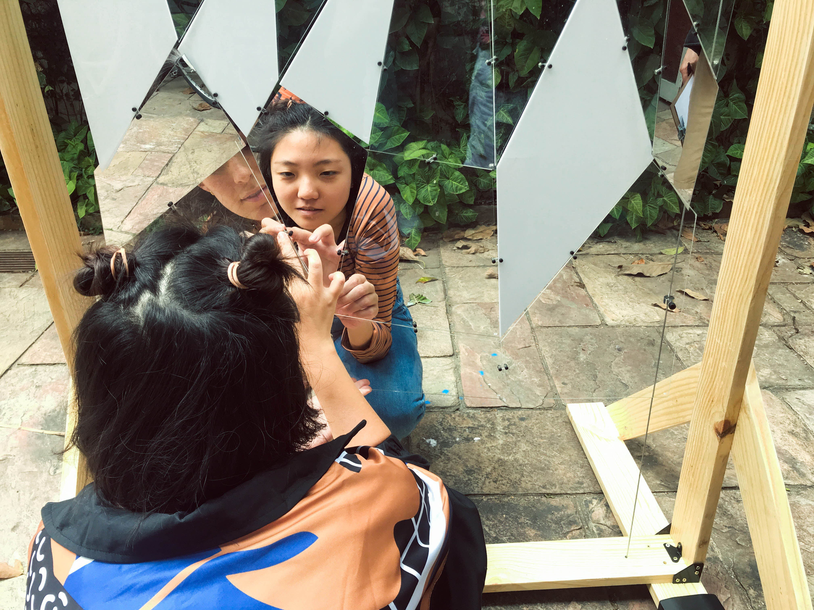
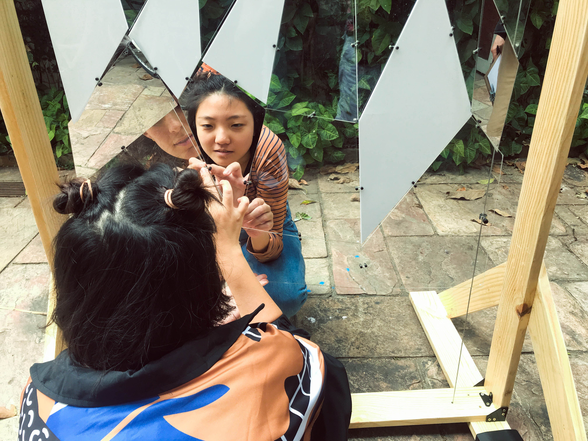
What is the difference between the memory, the dream and the imagination?
Art concept and Design: Gui Bullejos, Lina Lopes, Lidia Ganhito, Maurício Jabur, Renata Torralba Collaborators: Paulina Cho, Susan Moreno, Felipe Felix, Ricardo Frei, Mel Schultz, Helena Nascimento, Renata Fernandes, Jeff Barbato, Kristina Gonçalves, Mariana Espindola, Heryk Slawski, Paulo Renan, Maycon Martines, Everson Pedroso, Manoella Brunelli, Gabriela Pita, Jorge Mendes, Rodrigo Biserra, Luciano Gosuen
Art concept and Design: Gui Bullejos, Lina Lopes, Lidia Ganhito, Maurício Jabur, Renata Torralba Collaborators: Paulina Cho, Susan Moreno, Felipe Felix, Ricardo Frei, Mel Schultz, Helena Nascimento, Renata Fernandes, Jeff Barbato, Kristina Gonçalves, Mariana Espindola, Heryk Slawski, Paulo Renan, Maycon Martines, Everson Pedroso, Manoella Brunelli, Gabriela Pita, Jorge Mendes, Rodrigo Biserra, Luciano Gosuen
 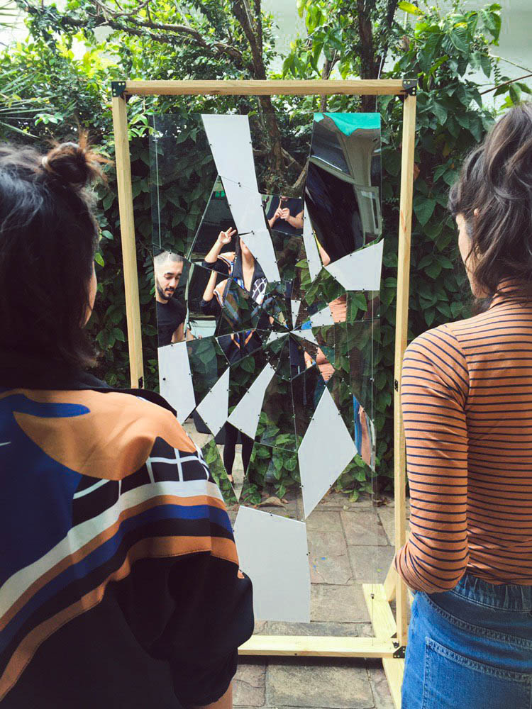
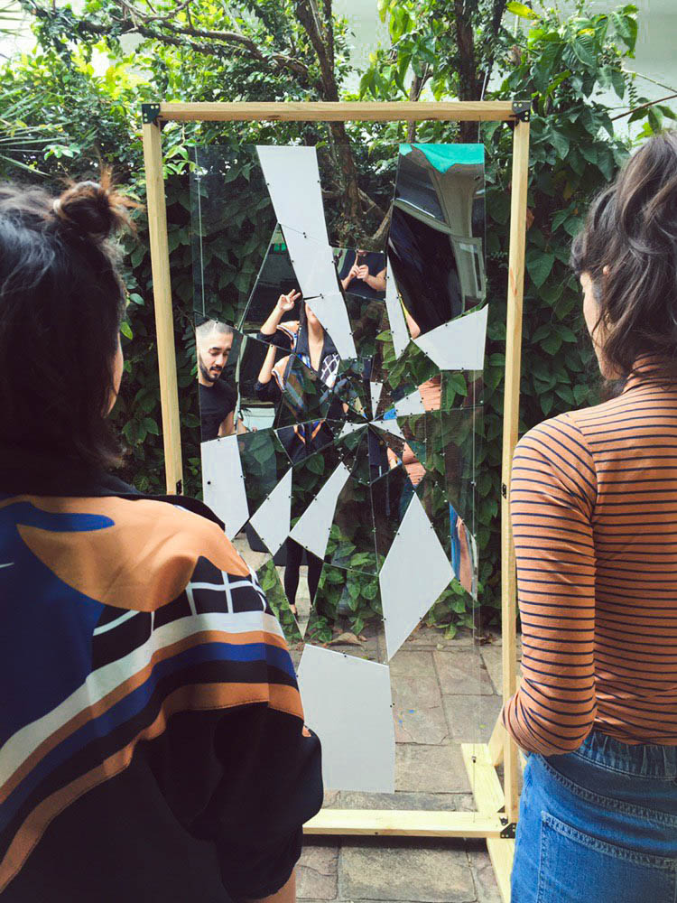
Between a thin, cracked and disfigured mirror sheet, one person or two people are invited to glimpse pieces of what they are and what they were, or thought to be.


Using the electronics devices in the structure, it's possible to distort and change the past's evocations
Speculating is an interactive art installation that invites the interactors to record short phrases of their oldest memories in order to create their spectra.
Speculating is an interactive art installation that invites the interactors to record short phrases of their oldest memories in order to create their spectra.
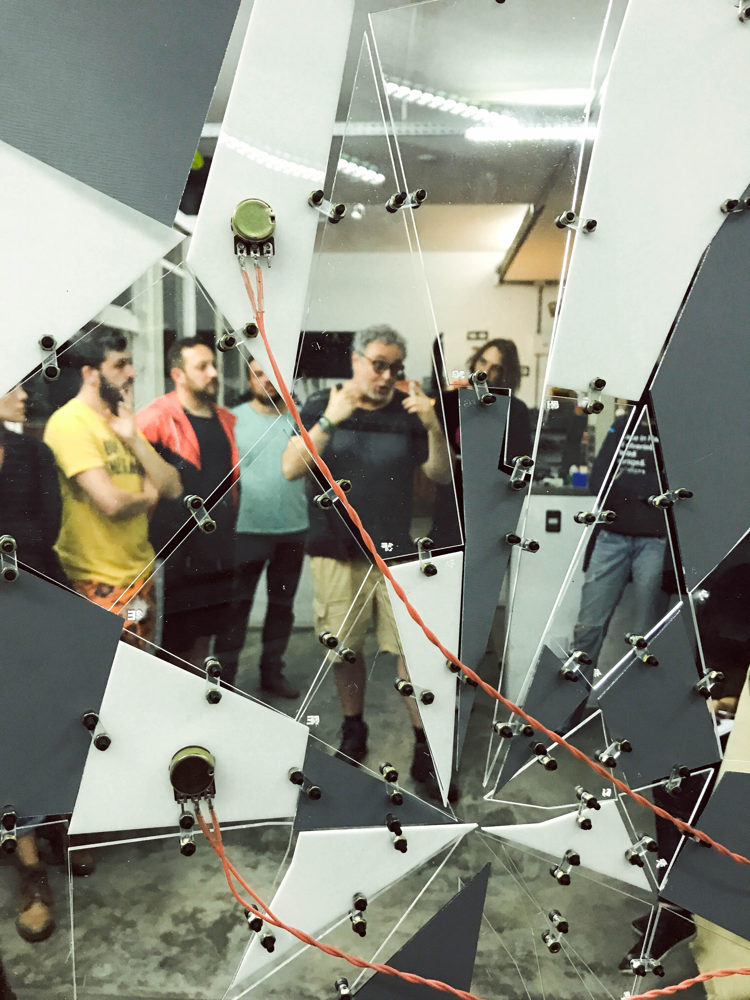

It was part of Lilo.Academy, an experimental program, which I participated as one of the leaders of the Art Installation discipline given to the students of Art and Digital Media of EBAC (British School of Creative Arts).
In this collaborative project, I lead the structure team helping them with the whole process of making and assemble the hardware, managing the process and challenging the group to come up with solutions to the presented problems during the process.
In this collaborative project, I lead the structure team helping them with the whole process of making and assemble the hardware, managing the process and challenging the group to come up with solutions to the presented problems during the process.
.a petal for three [2018]


A petal for three is part of an experience for a promoting event of a media company. We designed 4 installations. Each one has its concept attached to their audience: [a] identity; [b] entertainer; [c] knowledge; and [d] connection.
Art Concept: Edson Pavoni
Project Manager: Gui Bullejos
Designers: Lina Lopes and Junior De Gois
Collaborators: Mariana Lacerda
Software: Lucas Artacho
Electronics Lead: Diego Spinola
Producer: Gabriela Veiga and Mariana Nagem
Scenography: Casa Caucaia
Agency: Hands Agency
Photos by Rafael Frasão
Art Concept: Edson Pavoni
Project Manager: Gui Bullejos
Designers: Lina Lopes and Junior De Gois
Collaborators: Mariana Lacerda
Software: Lucas Artacho
Electronics Lead: Diego Spinola
Producer: Gabriela Veiga and Mariana Nagem
Scenography: Casa Caucaia
Agency: Hands Agency
Photos by Rafael Frasão
After we design these four experience, we were responsible for building the fourth installation about connection. We named this installation A Petal for Three, a 12 meters long kinetic installation composed by almost a hundred pieces of mirror dancing and standing in the air during a party promoting connection.
During an event for the media industry, the kinect installation stands above the audience. It invites you to be amazed by connection with other participants. Since every piece has unknown inclination, you never know to which eye your will cross.
But there is a specific point of the installation that unites people: in one of its three corners, if you visit it with one or more people, the corners goes down and embrace the group reinforcing their connection.
During an event for the media industry, the kinect installation stands above the audience. It invites you to be amazed by connection with other participants. Since every piece has unknown inclination, you never know to which eye your will cross.
But there is a specific point of the installation that unites people: in one of its three corners, if you visit it with one or more people, the corners goes down and embrace the group reinforcing their connection.
.micro-ecologies [2017]

Micro-ecologies is a series of four interactive art installations which was born from an extensive personal and scientific research about the mapping of spatial impacts in my identity formation process.
From the concept of mapping the encounters between the body+mind and the space around us, I created four interactive installation (city, forest, prairie and mangroove) based on the same system of construction I used on the spybarn. These installations came from an internal mapping of myself and, when I externalised them, I don't assume they are a conclusion, but a collective experience.
Each of them were precisely designed. Each material, each texture, each sensor and each atuador have a meaning.
Art concept: Gui Bullejos
Collaborators: André Aureliano, Alex Seino, Bruno Borges, Juan Ramos, Larissa Cristina, Lucas Artacho, Luiz Guerino, Mariana Sari, Thiago Gregio, Victor Borba, Wesley Totti, Yasmin Navarro.
Performers: Ísis Arrais, Natalia Lopes, Fly Martins, Agmar Beirigo
Stylish: Diego Gama
Download the book here.
From the concept of mapping the encounters between the body+mind and the space around us, I created four interactive installation (city, forest, prairie and mangroove) based on the same system of construction I used on the spybarn. These installations came from an internal mapping of myself and, when I externalised them, I don't assume they are a conclusion, but a collective experience.
Each of them were precisely designed. Each material, each texture, each sensor and each atuador have a meaning.
Art concept: Gui Bullejos
Collaborators: André Aureliano, Alex Seino, Bruno Borges, Juan Ramos, Larissa Cristina, Lucas Artacho, Luiz Guerino, Mariana Sari, Thiago Gregio, Victor Borba, Wesley Totti, Yasmin Navarro.
Performers: Ísis Arrais, Natalia Lopes, Fly Martins, Agmar Beirigo
Stylish: Diego Gama
Download the book here.
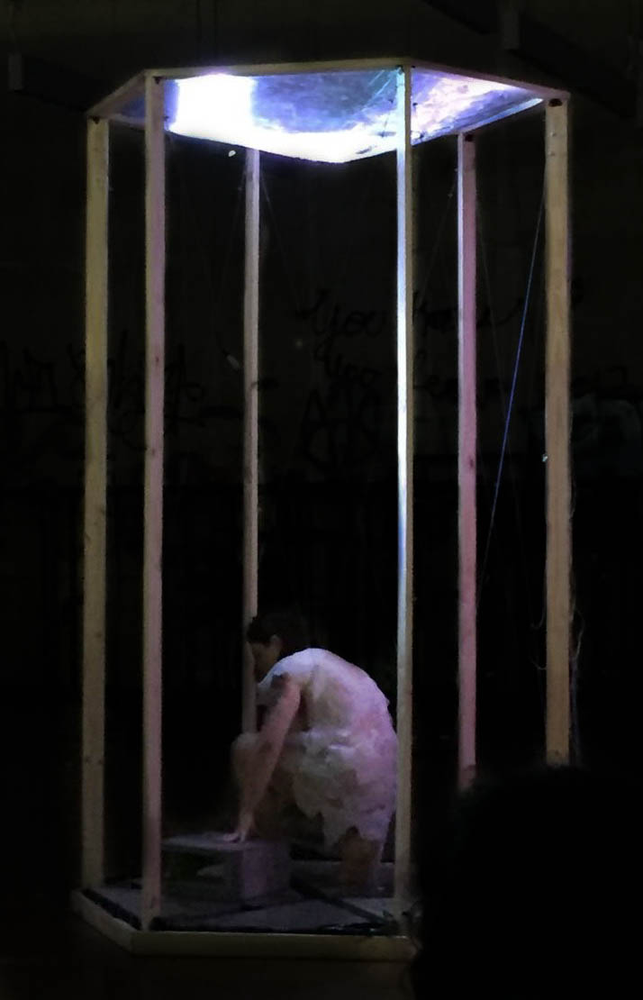

City: a mixture between concrete and water, it reveals the flow of my thoughts: non-stop, conforming and following in all directions. It has a presence sensor and two water pumps.
 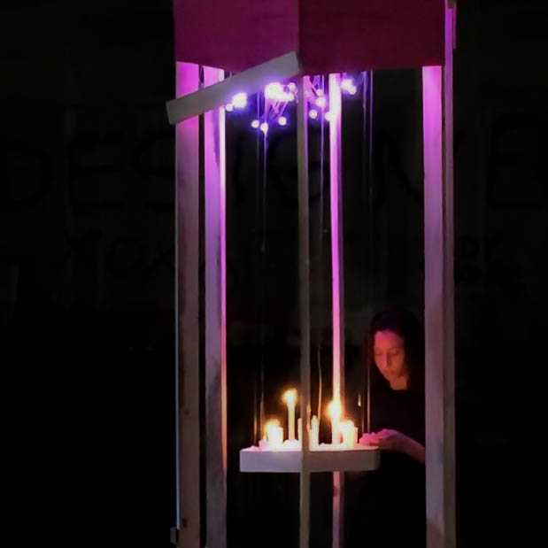
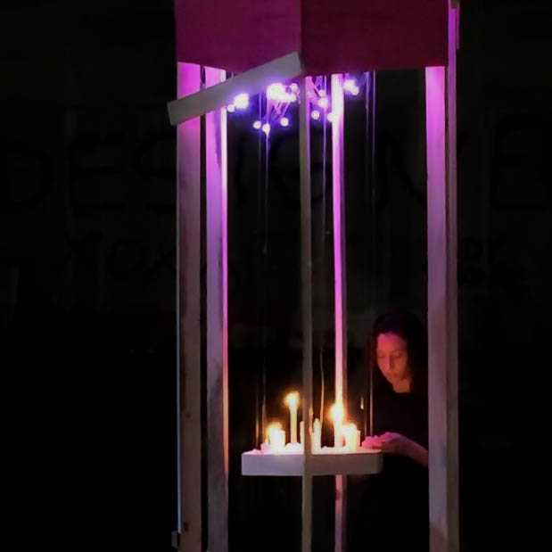
Prairie: it is the space preserved in solitude (intimacy of the soul) that slowly builds its dreams delicately. My personals altars are not made of golden, they are made of the simplest and humble devotion to my dreams. It has temperature sensors and RGB leds.


Forest: it is the place of my relationships, I cultivate them and they transform myself by the echoes of the interactions between us. It has humidity sensors on the soil and buzzers inside the cans.
 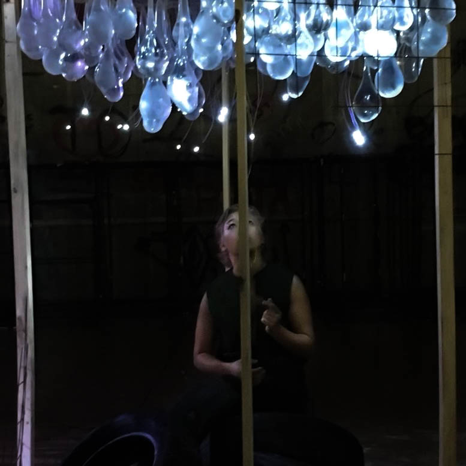
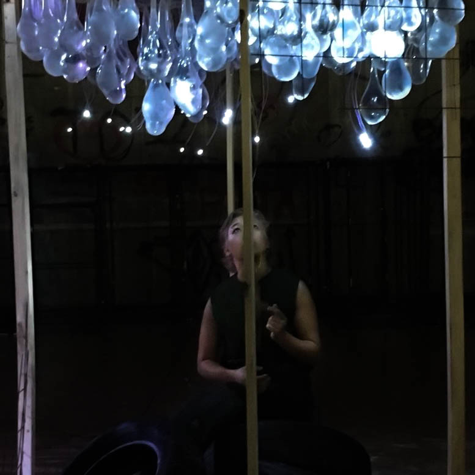
Mangrove: it represents simplicity and fragility while ensuring diversity and density. As an ecosystem, the mangrove is threatened by being so unique and fragile. At the same time, it has an infinite wealth of individuals inhabiting it, mainly because it functions as a natural "nursery" for several species. So, I would say my imagination is my mangrove. Be careful, calm down here.
.the white mirror [2018]


Envisioned to the lounge of a fintech company, the installation seems to be a white analogical wall until a passerby walks in from of it.
As a mirror to each human energy, the installation reveals the human energy through a spectrum of colors. When two people cross their paths, the creatures in the wall collide and explode in motion and colors celebrating the power of togetherness.
The installation is composed by 8 pixelated modules of composed by a panel of leds and microcontrollers customized to this installation.
Art concept and creative lead: Edson Pavoni
Production strategy and design lead: Carolina Anselmo
Design: Lucas F. Artacho, Junior De Gois, Guilherme Bullejos
Electronics Lead: André Biagioni
Software, content and motion: Dimitre Lima
Creative Coding: Henrique Périgo
Mounting Lead: Erick Maniusis
Photos by Rafael Frasão
As a mirror to each human energy, the installation reveals the human energy through a spectrum of colors. When two people cross their paths, the creatures in the wall collide and explode in motion and colors celebrating the power of togetherness.
The installation is composed by 8 pixelated modules of composed by a panel of leds and microcontrollers customized to this installation.
Art concept and creative lead: Edson Pavoni
Production strategy and design lead: Carolina Anselmo
Design: Lucas F. Artacho, Junior De Gois, Guilherme Bullejos
Electronics Lead: André Biagioni
Software, content and motion: Dimitre Lima
Creative Coding: Henrique Périgo
Mounting Lead: Erick Maniusis
Photos by Rafael Frasão
.guiding memories [2017]
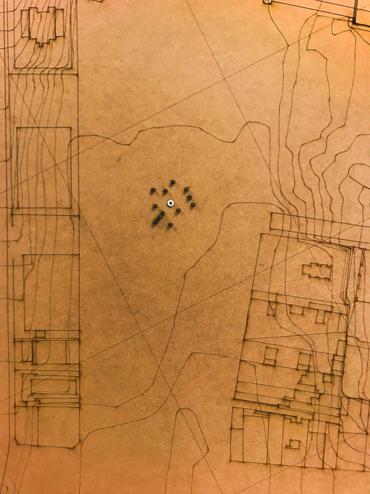
The Museum of the City of São Paulo is a network of historical buildings dated from the 17th and 20th centuries and spread around the city. They represent remnants of the rural and urban occupation of São Paulo.
The team was formed with people from several nationality and backgrounds. During a workshop we were challenged to develop a project to the Museum of the City of São Paulo. After we understood the context of it, we proposed a systematic intervention that could make the museum more notable and accessible.
Team: Anya Lawson, Chastine Bagge, Débora Taboada, Guilherme Bullejos, Hellen Oliveira, João Guirau, Nívea Pascoaloto
The team was formed with people from several nationality and backgrounds. During a workshop we were challenged to develop a project to the Museum of the City of São Paulo. After we understood the context of it, we proposed a systematic intervention that could make the museum more notable and accessible.
Team: Anya Lawson, Chastine Bagge, Débora Taboada, Guilherme Bullejos, Hellen Oliveira, João Guirau, Nívea Pascoaloto

As they represent the memory, we designed a set of alike modules that composed the installation which could represent the memory in our thoughts.
As a memory that lights our ideas, the installation would bright when someone crossed it by detecting their presence and revealing new information to the passerby.
The object would work as a display for people getting in touch with each of the Museum of the City of São Paulo's 13 buildings. That's why were would be a set of 13 pieces composing the whole installation.
As a memory that lights our ideas, the installation would bright when someone crossed it by detecting their presence and revealing new information to the passerby.
The object would work as a display for people getting in touch with each of the Museum of the City of São Paulo's 13 buildings. That's why were would be a set of 13 pieces composing the whole installation.
.house of time [2017]
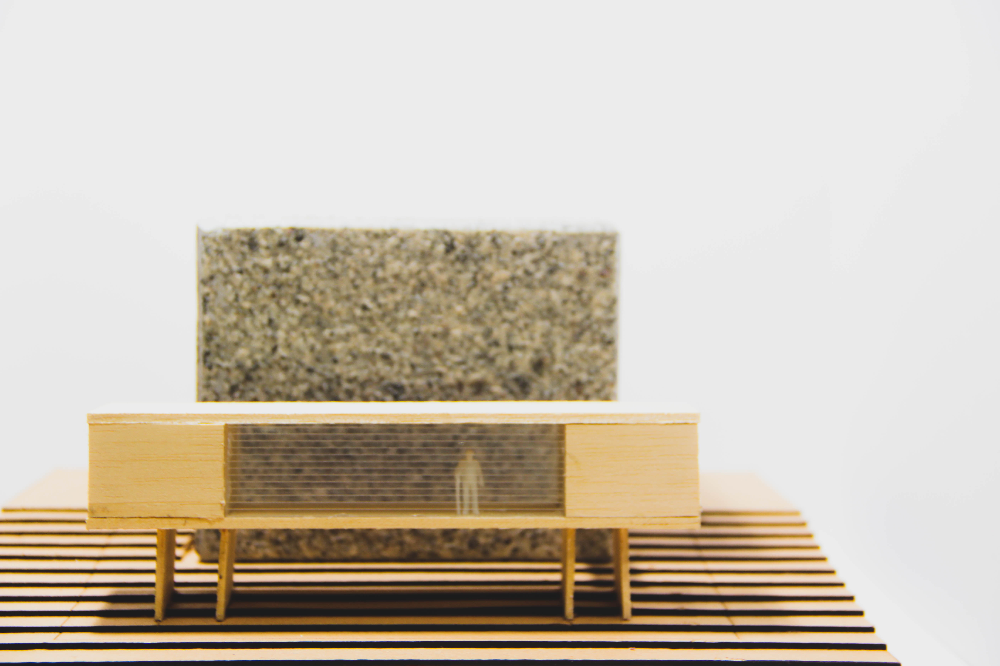


House of the past
Based on 3 tales, these project is composed by 3 houses which talks about the relation between the human and the time in a spatial way, showing the intrinsic relation of the humanity with the past, the present and the future. Besides the architectural drawings generated parametrically, the whole process peaked in 3 models composed by unusual materials for making architectural models like plaster, granite and argil.
Based on 3 tales, these project is composed by 3 houses which talks about the relation between the human and the time in a spatial way, showing the intrinsic relation of the humanity with the past, the present and the future. Besides the architectural drawings generated parametrically, the whole process peaked in 3 models composed by unusual materials for making architectural models like plaster, granite and argil.


House of the present
The whole project appeared as a deep way to explore the relation between three different contexts and its potentials: one house in the city suburbs, one in the seacoast and one the countryside of São Paulo.
The whole project appeared as a deep way to explore the relation between three different contexts and its potentials: one house in the city suburbs, one in the seacoast and one the countryside of São Paulo.


House of the future
Starting the approach in a ludic and poetic way by choosing 3 tales: one brazilian (The Pink Boto), one dutch (The Flying Dutchman) and one japanese (Urashima Tarô: The Fisherman's Tale). From these 3 tales I elaborated 3 characters; one for each context; looking for delineate each different vision of the time so that the space reveals this reverberations.
Starting the approach in a ludic and poetic way by choosing 3 tales: one brazilian (The Pink Boto), one dutch (The Flying Dutchman) and one japanese (Urashima Tarô: The Fisherman's Tale). From these 3 tales I elaborated 3 characters; one for each context; looking for delineate each different vision of the time so that the space reveals this reverberations.
.spybarn [2016]


Art concept and Design: Gui Bullejos
Collaborator: Kornelija Chaleckyte
A temporary shelter created to compose - with other shelters - a village built from wasted materials.
Born from the concept of a barn to trojan horses of a village, conceptually the project intents to parasite other shelters and corrupt their notion of privacy protection.
Collaborator: Kornelija Chaleckyte
A temporary shelter created to compose - with other shelters - a village built from wasted materials.
Born from the concept of a barn to trojan horses of a village, conceptually the project intents to parasite other shelters and corrupt their notion of privacy protection.


Soft toys of wild animals were adapted to look like farming animals which were distributed to the village as a gift to the people harmony. A hidden camera on these animals would broadcast the intimacy of the villagers in the transparent skin of the shelter during the night.
This work emerged from a group effort, which had it bases on the practical and easy assembling system. Since it took few hours to build, we could expose the construction to few environments and improve the resistance of it.
This work emerged from a group effort, which had it bases on the practical and easy assembling system. Since it took few hours to build, we could expose the construction to few environments and improve the resistance of it.
.house of students [2016]

Art concept and Design: Gui Bullejos
This urban installation was created based on the series of loneliness. This intervention happened in an underused space beside the Den Haag Central Station and assumes that the differences of each passerby can be crossed during their paths establishing common points which can grow as groups that share the same differences - a community.
This urban installation was created based on the series of loneliness. This intervention happened in an underused space beside the Den Haag Central Station and assumes that the differences of each passerby can be crossed during their paths establishing common points which can grow as groups that share the same differences - a community.
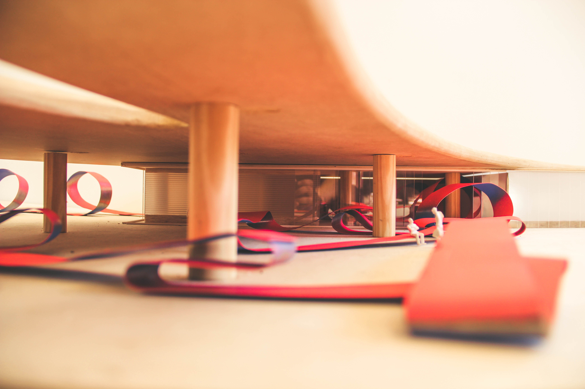

From this point of view, I designed an intervention which circles the space and creates several shapes in the space inviting people to populate and appropriate this huge ring shaped sculpture that intends to create a communal space in the urban context. Highlighting the intention, I projected a student house bar crossed by the sculpture to organize and intensify the use of this public space.
.models about loneliness [2016]

 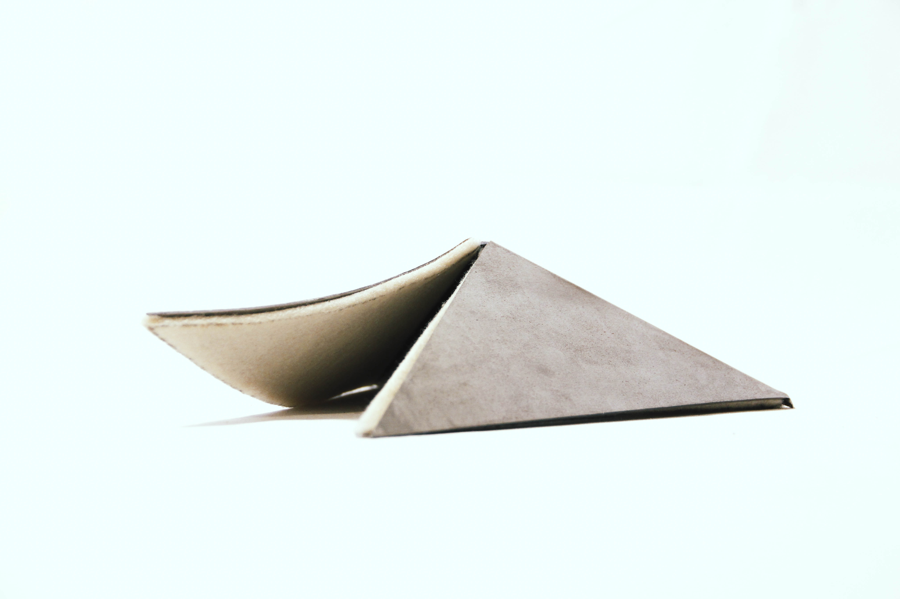
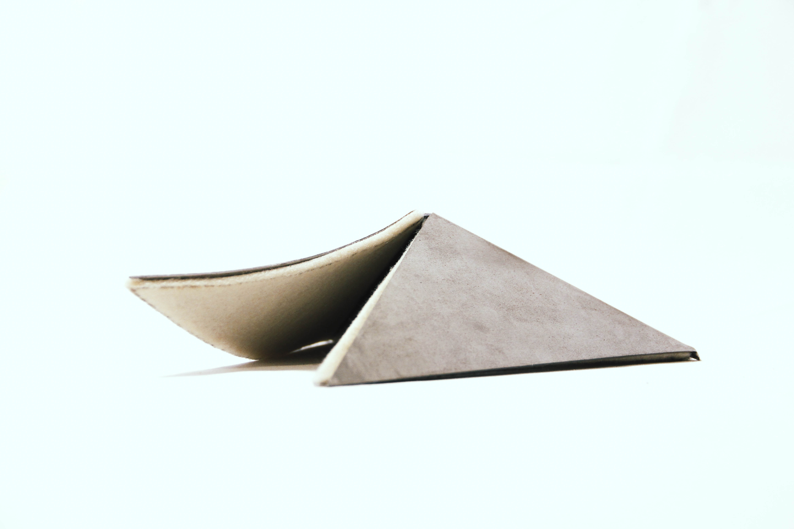

Art concept and Design: Gui Bullejos
Loneliness is a challenging theme in global cities. How is it possible to live in a city with millions and yet feel lonely?
This series of model intends to answer this using the scale's perception starting from the global to the individual notions resulting a strategic approach to deal with it
Loneliness is a challenging theme in global cities. How is it possible to live in a city with millions and yet feel lonely?
This series of model intends to answer this using the scale's perception starting from the global to the individual notions resulting a strategic approach to deal with it

Infinity: global scale
(1st image in the left column)
Connections are there not only to be done, but to be used as an unceasing flow of knowledge, emotions and experiences in both ways and directions of sharing.
Pressure: city scale
(2nd image in the left column)
It's about the heavy and strong hierarch built in society which tries to suppress people by not giving them wide space to express themselves.
Shield: building scale
(3rd image in the left column)
Each person has its personal empires enclosed by walls. Inside these walls there is a world designed to safety of its true-self; a lonely safe haven.
Cover: individual scale
(4th image in the left column)
It's about the strange atmosphere which hover in the city and somehow force people to cover their vulnerabilities and differences in order to fit in society.
Sharing: strategy model
(the image in the right column)
The first step to deal with loneliness in the urban context is to tear down the barriers between everyone. As a horizontal movement, an intervention allowing humans to co-sharing, exchanging information, knowledges, skills and experiences apart from their differences and similarities.
(1st image in the left column)
Connections are there not only to be done, but to be used as an unceasing flow of knowledge, emotions and experiences in both ways and directions of sharing.
Pressure: city scale
(2nd image in the left column)
It's about the heavy and strong hierarch built in society which tries to suppress people by not giving them wide space to express themselves.
Shield: building scale
(3rd image in the left column)
Each person has its personal empires enclosed by walls. Inside these walls there is a world designed to safety of its true-self; a lonely safe haven.
Cover: individual scale
(4th image in the left column)
It's about the strange atmosphere which hover in the city and somehow force people to cover their vulnerabilities and differences in order to fit in society.
Sharing: strategy model
(the image in the right column)
The first step to deal with loneliness in the urban context is to tear down the barriers between everyone. As a horizontal movement, an intervention allowing humans to co-sharing, exchanging information, knowledges, skills and experiences apart from their differences and similarities.
.communal cave [2016]

Art concept and Design: Gui Bullejos
We are constantly receiving information and very often we are saturated of them. The limitless amount of information we perceived can be overwhelming to the limited body. That's why lots of things we automatize. We lose the details.
Communal cave invites us to recall the details. Entering through three dark corridors that leads to its core that has timered flashing lights. The visitors, which haven't never seen each other, now are invited to pay attention to recognize their fellows inhabitants between the flashes.
The cave shaped format of the installation was parametrically designed.
We are constantly receiving information and very often we are saturated of them. The limitless amount of information we perceived can be overwhelming to the limited body. That's why lots of things we automatize. We lose the details.
Communal cave invites us to recall the details. Entering through three dark corridors that leads to its core that has timered flashing lights. The visitors, which haven't never seen each other, now are invited to pay attention to recognize their fellows inhabitants between the flashes.
The cave shaped format of the installation was parametrically designed.
.own sanctuary [2016]

Art concept and Design: Gui Bullejos
This installation came from my inquiries and explorations about space as a meanning of introspection and navigation through mental maps. So I created a space of introspection that is aiming at users entering into themselves and navigating the entire universe created in their innermost parts. It's a small and simple individual installation that would provide a space of introspection to the users.
The form, materiality and elements of the composition seek to establish an atmosphere where users feel welcome to go into a reflection where they are able to navigate their own mental maps reliving and rethinking all their connections with themselves and with the world. Involved by space, individuals are invited to have a deep experience in which they give themselves as a sacrifice in order to transcend to a deep self knowledge.
This installation came from my inquiries and explorations about space as a meanning of introspection and navigation through mental maps. So I created a space of introspection that is aiming at users entering into themselves and navigating the entire universe created in their innermost parts. It's a small and simple individual installation that would provide a space of introspection to the users.
The form, materiality and elements of the composition seek to establish an atmosphere where users feel welcome to go into a reflection where they are able to navigate their own mental maps reliving and rethinking all their connections with themselves and with the world. Involved by space, individuals are invited to have a deep experience in which they give themselves as a sacrifice in order to transcend to a deep self knowledge.